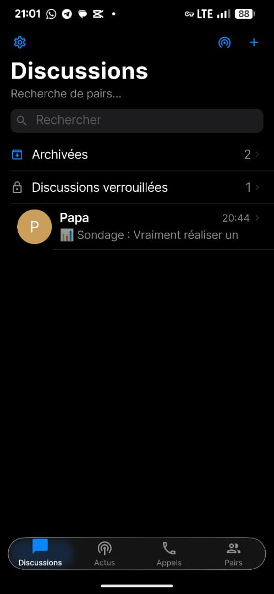
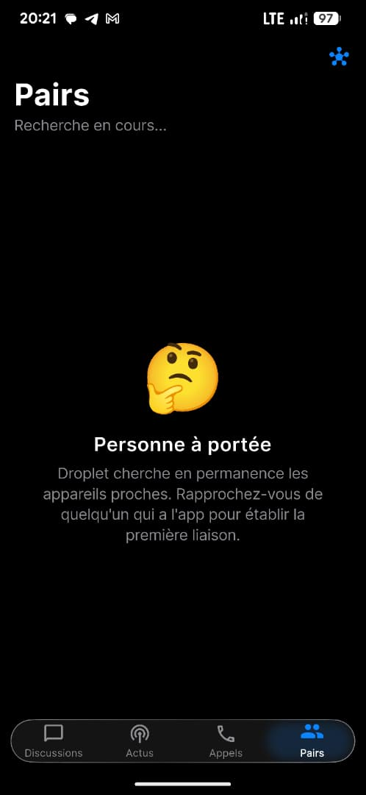
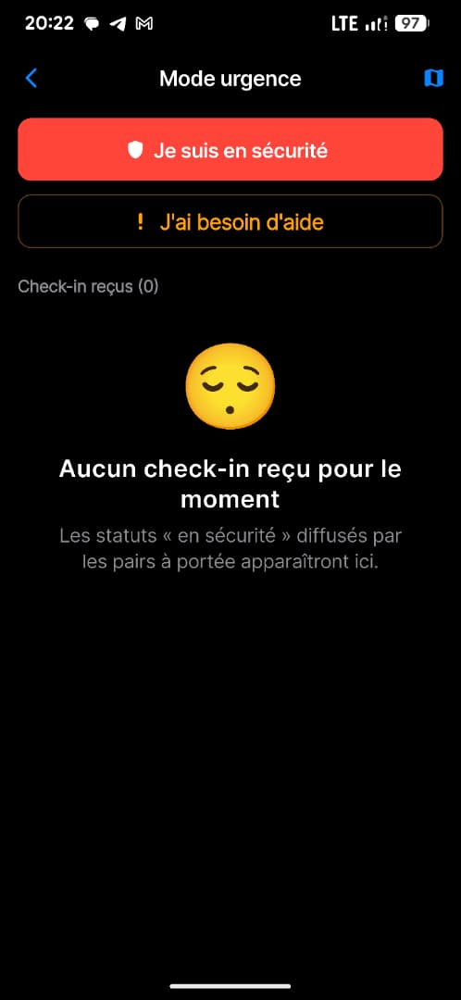
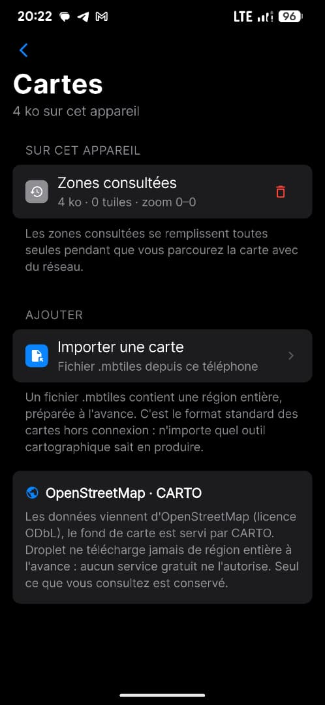

MTN Mobile Money
Cameroun
À renseigner
- 1Composez
*126#sur votre téléphone. - 2Choisissez « Transfert d'argent », puis collez ou saisissez le numéro.
- 3Entrez le montant, validez avec votre code secret.
Droplet fait passer vos messages de téléphone en téléphone, par Bluetooth et par Wi-Fi. Sans antenne, sans opérateur, sans forfait, sans compte — et sans le moindre serveur.
WhatsApp, Telegram, Signal : tous excellents, et tous bâtis sur la même hypothèse. Votre message part vers un centre de données, souvent à un continent de distance, avant de redescendre vers quelqu'un qui se trouve peut-être dans la pièce d'à côté.
Tant que la couverture tient et que le forfait est chargé, cette hypothèse est invisible. Le jour où l'une des deux lâche — coupure, panne, zone blanche, catastrophe, crédit épuisé — elles s'arrêtent toutes ensemble, exactement au moment où l'on a le plus besoin de joindre quelqu'un.
Droplet part de l'hypothèse inverse : il n'y a pas de réseau. Tout le reste en découle.
Votre téléphone possède déjà deux radios capables d'atteindre un autre téléphone sans passer par quoi que ce soit. Droplet ne fait rien d'autre que s'en servir.
C'est le cas le plus fréquent, et celui que la plupart des systèmes maillés traitent le plus mal. Droplet garde le message. Il attend, en mémoire, sur votre téléphone. Dès qu'un appareil passe à portée — dans la rue, dans un taxi, au marché — le message repart par lui.
C'est ce qu'on appelle le stockage et retransmission. Votre destinataire n'a même pas besoin d'avoir été là au moment de l'envoi : le message voyage dans la poche de quelqu'un d'autre, chiffré, illisible pour lui, jusqu'à trouver son chemin.




Une liste de conversations comme les autres — discussions archivées, discussions verrouillées, tout y est. Rien ne rappelle qu'aucun serveur n'est impliqué.
« Personne à portée » n'est pas une panne — c'est l'état normal entre deux rencontres. Droplet cherche en continu, et le dit honnêtement plutôt que d'afficher un chargement qui ne finit jamais.
Un appui diffuse « Je suis en sécurité » à tout le voisinage joignable — sans réseau, sans opérateur. Les check-in reçus des autres apparaissent au même endroit.
Les zones consultées se conservent toutes seules, sans qu'aucune région ne soit téléchargée d'avance en cachette. 4 Ko, ici, pour ce qui a déjà été vu.
Fonctionner sans réseau ne veut pas dire se contenter de texte brut. Tout ce qu'on attend d'une messagerie est là.
Réponses citées, réactions, accusés de réception, recherche. En groupe, un message reçu avant sa clé n'est pas perdu : la clé manquante est rattrapée.
En tête-à-tête ou à plusieurs. Ils demandent une liaison Wi-Fi : le Bluetooth, à dix-neuf octets par écriture, ne peut pas porter de la voix.
Et des notes vocales avec leur vraie forme d'onde, lisibles en 1×, 1,5× ou 2×. Les vidéos trop lourdes sont recoupées avant d'être envoyées.
Une photo, une vidéo ou un mot, diffusés au voisinage et relayés de proche en proche. Ils s'effacent au bout de vingt-quatre heures.
Les zones consultées restent sur le téléphone et s'affichent ensuite sans internet. Les positions partagées arrivent par le maillage, chiffrées.
« Je vais bien », diffusé à tout le voisinage en un appui, avec ou sans position approximative. Et un mode d'urgence qui insiste jusqu'à passer.
| Messagerie ordinaire | Droplet | |
|---|---|---|
| Sans couverture réseau | Ne fonctionne pas | Fonctionne |
| Sans forfait de données | Ne fonctionne pas | Fonctionne |
| Coût par message | Données mobiles | Aucun |
| Compte à créer | Numéro de téléphone | Aucun |
| Où sont vos messages | Sur des serveurs | Sur votre téléphone |
| Qui peut vous couper | L'opérateur, l'éditeur | Personne |
| Portée | Mondiale | Le voisinage, étendu par les relais |
Touchez l'heure d'un message reçu : son état, le délai réel jusqu'à la lecture, et les appareils qui l'ont fait suivre, dans l'ordre. Aucune autre messagerie ne peut afficher cela — chez les autres, la réponse est toujours « par nos serveurs ».
C'est le principe même du maillage — et c'est exactement pour cela que le chiffrement n'est pas une option ici, mais la condition pour que le reste tienne debout.
Une application qui ne parle que de ses qualités demande qu'on la croie sur parole. Voici où elle s'arrête — pour que le reste soit vérifiable.
128 Mo pour les téléphones 64 bits (la quasi-totalité depuis 2019). 66 Mo pour les modèles 32 bits plus anciens. Android 6.0 ou plus récent. Aucun compte à créer : l'application est utilisable dans les secondes qui suivent l'installation.
C'est lourd pour une messagerie, et c'est assumé : Tor, le chiffrement et le maillage tournent tous sur l'appareil — il n'y a pas de serveur pour faire le travail à leur place.
C'est une version de test. Elle fonctionne, elle n'est pas finie. Elle peut se fermer toute seule, rater un message, vider la batterie plus vite que prévu. Lisez ce qui est attendu de vous avant de l'installer.
Droplet n'est pas encore une application finie, et ce n'est pas une précaution de langage : c'est ce qui rend votre place ici intéressante.
Une messagerie ordinaire est testée par une équipe, dans un bureau, sur du bon matériel. Droplet ne peut pas l'être : il n'existe que s'il y a plusieurs téléphones, à plusieurs endroits, à portée les uns des autres. Aucune salle d'essai ne reproduit une rue de Yaoundé un vendredi soir, ni un quartier où le réseau vient de tomber.
Les premiers testeurs ne rendent donc pas un service : ils sont la condition d'existence du réseau. Ce que vous constaterez dans les prochaines semaines — un message qui met trois heures, un appareil que le vôtre ne voit jamais, une fermeture inexpliquée — est une information que personne d'autre au monde ne détient.
Les personnes qui auront signalé un défaut reproductible figureront dans les remerciements de l'application. Sous le pseudo de votre choix, ou pas du tout — c'est vous qui décidez.
Chaque correction part aux testeurs avant tout le monde, et vous saurez laquelle de vos remarques l'a provoquée.
Les tout premiers utilisateurs d'un maillage en sont le cœur : c'est autour de vos appareils que les suivants pourront se connecter.
Une seule chose, et elle tient en deux appuis. Droplet n'a aucun serveur : aucun rapport de plantage ne remonte nulle part. Quand l'application se ferme toute seule chez vous, la seule trace au monde est un fichier sur votre téléphone. Si vous ne l'envoyez pas, le défaut n'existe pour personne.
Pas de publicité, pas d'abonnement, pas de données revendues — il n'y a même pas de serveur pour les collecter. Ce qui reste, ce sont des coûts réels : un téléphone de test, une clé de signature, du temps. Si l'application vous sert, voici comment y contribuer.
*126# sur votre téléphone.#150# sur votre téléphone.Vérifiez les quatre premiers et les quatre derniers caractères après avoir collé l'adresse. Un virement en bitcoin ne s'annule pas.
Un maillage à un seul appareil ne transporte rien. Chaque installation autour de vous agrandit la portée pour tout le voisinage — y compris la vôtre.
Droplet dépend de radios, de distances et de téléphones très différents les uns des autres. Un rapport précis vaut des semaines de suppositions.
L'application envoie son propre fichier d'installation par Bluetooth. Le transmettre ne consomme aucune donnée mobile, ni chez vous, ni chez la personne qui le reçoit.